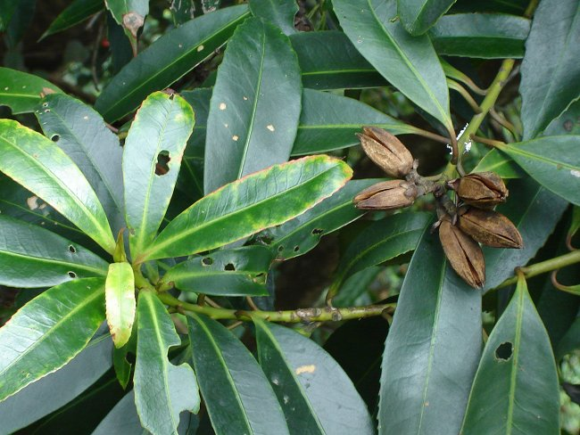

华南植物园“一种大头茶种子萌发及育苗的方法”获国家发明专利

5月14日获悉，由中国科学院华南植物园王发国等科研人员完成的“一种大头茶种子萌发及育苗的方法”获得国家发明专利授权（专利号：ZL 201310548253.8）。
大头茶分布于中国海南、广东、广西、台湾、香港等地。高5-15米。其株形美观，花大洁白并开于秋冬季，果密生于枝上，生长快，耐旱、耐贫瘠，是一种新优木本花卉植物，可用于庭院、公园或街道绿化及荒山造林。同时，大头茶在铝离子浓度高的污染地区亦能生存，并且能将铝吸收及储存，能为环境提供较强的生态服务。
作为一种优良的乡土木本花卉植物，大头茶在建设绿色中国、建设节约型园林等实践活动过程中曾被多位专家一致推荐，已在市场上崭露头角，但据调查，本种的种子萌发率不稳定甚至有些批次种子根本不萌发，通过挖掘野生资源难以满足生产及市场的需求，现急需寻求一种人工栽培的繁育方法。
该发明公开了一种大头茶种子萌发及育苗的方法。它是采集微裂或将裂的大头茶果实，将该大头茶果实用含水量20-30%的介质包住，然后放入黑色袋子中，放在20℃-25℃环境下4-7天至微裂，对微裂的果实立即脱壳取种保留种翅，选择饱满完整带有种翅的种子与湿沙混匀于15℃-25℃贮藏25-30天，湿沙的含水量在初期为10%-15%，中后期增至50%，贮藏完后用质量分数0.1%-0.2%的高锰酸钾溶液浸泡种子灭菌；将沙床翻晒并进行消毒，平整沙床并浇透清水，然后将灭菌后的种子播于沙床中，沙床上面覆盖一层遮光网，进行浇水或喷雾保湿，种子的萌发温度为10℃-25℃，种子萌发并生长直至长成大头茶小苗。